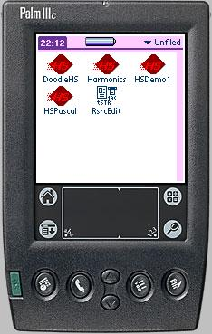

HSPascal features
Instead of reading the following it might be faster just to
try a demonstration of HSPascal on your
own computer.
- Very fast and easy installation, less
than 2 MByte download
- IDE with context sensitive help on Palm
API functions
- No need for dos command, all is inside
one single program
- Strings are native "C" strings,
but still declared as "var S:
String[20]". No allocation hassle,
no overwritten memory, plain simple.
- Byte, Integer, Longint supported. Native
Integer size is 16 bit. 32 bit integer
calculations works too
- Set types with max 256 elements
- Floating point (+, -, *, /,
Sin,Cos,ArcTan,Ln,Exp,Sqr,Sqrt), without
using MathLib
- Assembler
right inline in the Pascal code
- Resources
inline in Pascal code, makes visual
inspection easy
- Resource import from raw bin files like
"tAIB03e8.bin" for PilRC usage
like {$R *.bin} and {$R *.ro}
- Header files written in Pascal Units
(PalmSource license obtained to
distribute)
- Some extra units like Crt, HSUtil, ...
- Inline assembler (HSAsm), using normal
68K syntax
- Runtime library included, written in
Pascal style, using buildin HSAsm and
Pascal
- No temporary files used/generated, all
memory based. Clean compile every time
- Disassembler included for easy code
inspection (68K assembler)
- Map file output: Source file vs binary
code, symbol table
- HSPC, a commandline version of the
compiler (for usage under other IDE's)
- Produces fast optimized code
- Source files can be precompiled/encrypted
for safe 3th part selling of your source
files (on request)
- Interfaces to PilRC and PiBuilder
- Most small programs can be contained in
one single source file
- No known problems using new ARM devices
- Newsserver
news://news.fihl.net open to users (U:beta,P:tester)
- HSPascal Manual, 70 pages in pdf format
Known bugs and missing items
- HSPascal is not a visual developement
package. It looks more like TurboPascal
than Delphi
- Some header files not translated to
Pascal
Audience
HSPascal is designed for programmers having
some knowledge in programming. HSPascal is not designed for programmers
mostly doing drag and drop. A typical user could be a Turbo
Pascal user or an advanced Delphi user.
|
 |